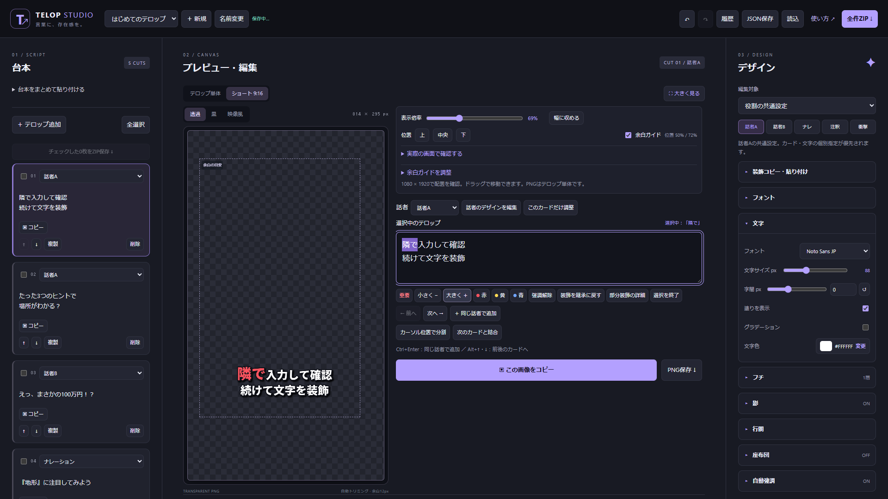

01 / 起動する
GitHub Pagesで公開したURLを開けば、そのまま利用できます。ビルド・npm・Node.jsは不要です。Google FontsとJSZipをCDNから取得するため、インターネット接続が必要です。
ローカルでは、Pythonがインストールされている場合、同梱の start-local.cmd をダブルクリックします。ブラウザで http://localhost:8766 を開き、終了時はサーバーのウィンドウで Ctrl+C を押します。
手動で起動する場合は、アプリのフォルダーで次を実行します。
python -m http.server 8766 --bind 127.0.0.1ES Modulesを使うため、index.html のダブルクリック（file://）では動きません。仕様書とこのマニュアルは、単独のHTMLとして開けます。localhostと127.0.0.1、ポート違い、GitHub公開URLはそれぞれ別の保存場所です。作業を移すときはJSONを使ってください。
02 / まず1枚作る
- 上部の「＋ 新規」でプロジェクトに名前を付けます。空のカードが1枚できます。
- 中央の「選択中のテロップ」に文字を入力します。Enterで画像内改行できます。
- 左のカードのプルダウンで役割を選びます。
- 右の「デザインセット」から雰囲気を選び、「適用」を押します。
- 「PNG保存 ↓」で透過画像を保存します。
初回起動時は、5枚のサンプルが入った「はじめてのテロップ」が表示されます。サンプルを直接編集しても構いません。
03 / 台本をまとめて入れる
左上の「台本をまとめて貼り付ける」を開き、入力後に「カードに追加」を押します。既存のカードは残り、末尾へ追加されます。
A: たった3つのヒントで
場所がわかる？
B: えっ、まさかの100万円！？
N: 『地形』に注目してみよう
※ 答えは最後に
! あなたは解ける？空行が次のカードの区切りです。通常の改行は同じ画像内に残ります。カードを作った後は、左または中央の入力欄でいつでも編集できます。入力欄に文字装飾タグを直接書く必要はありません。
| 行頭 | 役割 | 画像上の扱い |
|---|---|---|
| A: / Ａ： | 話者A | 記号を除去 |
| B: / Ｂ： | 話者B・ツッコミ | 記号を除去 |
| N: / Ｎ： | ナレーション | 記号を除去 |
| ※ | 注釈 | ※を残す |
| ! / ！ | 衝撃・タイトル | 先頭記号を除去 |
| なし | 話者A | そのまま |
行頭判定は一括取り込み時に行います。作成済みのカード内で「B:」などを入力しても役割は変わりません。役割はプルダウンで変更してください。
カード下部の「↑」「↓」で順序変更、「複製」で装飾ごとコピー、「削除」で削除できます。「全選択」と各カードのチェックは、セットの複数適用に使います。
04 / 1文字からデザインを変える
- 中央または左の入力欄で、変えたい文字をドラッグ選択します。
- 右の編集対象が「選択した文字」に切り替わります。
- 「大きく」「赤」「黄」「青」で素早く変更するか、右の詳細設定を変更します。
選択した文字だけのフォント・サイズ・グラデーション・3重フチ・影を変更できます。設定欄をクリックして入力欄のハイライトが消えても、最後に選択した範囲を保持します。画面の「○文字を選択中」を目印にしてください。
| 編集対象 | 反映範囲 |
|---|---|
| 現在のカード全体 | 今選んでいる1枚だけ。座布団・文字揃えもここで設定。 |
| 選択した文字 | 選択範囲だけ。複数文字で設定が異なる場合、右欄には先頭文字の手動設定を表示。 |
| 役割の共通設定 | その役割を継承するカード。下の役割タブで対象を切り替える。 |
文字の個別指定 → カード個別設定 → 役割共通設定の順に優先します。自動強調よりも手動の指定が優先されます。例えば手動で色だけ指定した場合、自動強調のサイズ倍率は引き続き有効です。
「強調解除」は、選択範囲の手動装飾と自動強調を外します。「役割に戻す」は文字の個別指定を消し、カード／役割設定と自動強調を再び継承します。カード全体の「初期値に戻す」はカード個別設定を外し、役割の共通設定に戻します。文字単位の設定は別途解除してください。
文字を修正した場合、変更されなかった前後の文字の装飾は維持します。新しく入力・置換した文字は個別装飾なしで入り、カードの設定を引き継ぎます。
05 / デザインセットとマイセット
「標準」「解説」「実況」「シリアス」「謎解き」から選び、適用先を「現在のカード」「チェックしたカード」「すべてのカード」から指定します。「部分装飾を残す」を外すと、対象カード内の文字単位の装飾も初期化されます。
セットを適用したカードには個別設定が付きます。その後で役割の共通設定を変えても、セットから適用した値が優先されます。共通設定に戻したい場合は、そのカードの編集対象を「現在のカード全体」にして「初期値に戻す」を押します。
「現在の5役割をマイセットに保存」で名前を付けて保存できます。役割の共通設定5つを保存し、現在のカードに個別設定があれば、そのカードの役割には現在の見た目を取り込みます。文字ごとの部分装飾はマイセットに含まれず、プロジェクト側に保存されます。
マイセットは同じブラウザ内の全プロジェクトで使えます。「マイセット書出」「読込」で別の環境に移せます。
06 / 細かいデザイン設定
- 文字：5フォント、12〜240px、単色または上下グラデーション。
- フチ：1が内側、2が中間、3が外側。太さは外へ積み上がります。各層でON/OFF・色・太さを指定。
- 影：ぼかし・右下への距離・色を設定。
- 座布団：背景色・不透明度・角丸・内側余白・枠線。枠線にも設定した不透明度が適用されます。
- 文字揃え：複数行を左・中央・右で配置。長い文章は自動折り返ししないため、入力欄で改行してください。
- 自動強調：100万円・99%・3つなど、感嘆符、疑問符、『』と【】で囲んだ箇所を検出。倍率と強調色を変更できます。
プレビューの「透過」「黒」「映像風」は確認用背景です。PNGには背景を含めず、座布団を有効にした場合だけ指定した背景ボックスが含まれます。
07 / 保存して動画編集ソフトへ
単体PNG
中央の「PNG保存 ↓」で現在の1枚を保存します。出力画像にはフチと影を含め、可視部分の周囲に12pxの透明余白を付けます。文字数やデザインにより画像寸法が変わるため、編集ソフトでは位置と倍率を確認してください。
全件ZIP
上部の「全件ZIP ↓」で、カード順に連番を付けてまとめます。ZIPを展開してから編集ソフトへ読み込みます。出力開始時点の台本を使うため、出力中の編集はそのZIPへ反映されません。
001_A_たった3つのヒントで.png
002_B_えっ、まさかの100万円！？.png
003_N_『地形』に注目してみよう.pngタイトルの役割名はTITLE、注釈はNOTEで出力します。ファイル名に使えない記号は除去します。
画像コピー
中央の「この画像をコピー」、左のカードの「▣」、サムネイルの「コピー」からPNGをコピーできます。HTTPSまたはlocalhostの対応ブラウザが必要です。ブラウザの権限を求められた場合はコピーを許可してください。
ブラウザの画像コピー成功は確認済みですが、Clipchamp／Premiereへの直接Ctrl+V取り込みは実機未検証です。貼り付けを受け付けない場合はPNG保存を使ってください。
Clipchampで使う
- PNGを保存します。一括ZIPの場合は展開します。
- Clipchampの「メディアのインポート」からPNGを読み込みます。
- 映像より上のトラックへ画像を配置します。
- 画面内の位置・大きさ・表示時間を調整します。
画像をインポートして映像の上に重ねる流れは、Microsoft公式の画像配置手順に基づきます。今回、ユーザーのClipchampプロジェクトを操作しての取り込み確認はしていません。
08 / 保存・バックアップ・履歴
変更は短い待ち時間の後にブラウザへ自動保存されます。プロジェクト切り替えは上部の名前欄から行います。ブラウザのデータ削除や別ブラウザへの変更では保存データを引き継げません。
- JSON保存：現在のプロジェクトとマイセット一覧を書き出します。画像だけでなく、後から装飾を編集できる状態を保存します。
- 読込：プロジェクトを新しい項目として追加します。既存のものを上書きしません。
- ↶ / ↷：戻る・やり直す。WindowsではCtrl+Z、Ctrl+Shift+ZまたはCtrl+Yも利用できます。
- 履歴：一覧から戻したい状態を選べます。直近50操作とその前の基準状態を保持します。
連続入力と短時間の同じスライダー操作は1操作にまとめます。履歴はプロジェクトごとに保持しますが、アプリを再読み込みすると最新状態だけが残ります。プロジェクト新規作成・切り替え、マイセット登録、JSON読み込みは編集履歴の対象外です。
09 / GitHub Pagesで公開する
- GitHubで公開先リポジトリを用意します。
- 配布ZIPを展開し、telop-studioフォルダーの中身をリポジトリのルートに置きます。
index.htmlとjs/がルート直下になる形です。 - リポジトリの Settings → Pages を開きます。
- Sourceで Deploy from a branch を選び、Branchを main、フォルダーを /(root) にして保存します。
- 公開完了後、Pages画面に表示されたURLを開きます。
GitHub公式：公開元の設定。同梱の .nojekyll を含めて配置してください。ビルド設定は不要です。このアプリの公開先は sakrainari.github.io/telopstudio です。mainブランチのルートを公開元に設定しています。
10 / 困ったとき
| 状況 | 対処 |
|---|---|
| 操作が反応しない | file://ではなくHTTP/HTTPSで開いているか確認。JavaScriptを有効にする。 |
| フォントが違う | インターネット接続後に再読み込み。CDNが遮断される環境では代替フォントになる。 |
| 役割の色を変えても反映しない | カードや文字の個別設定が優先されていないか確認。必要な範囲だけ継承へ戻す。 |
| コピーできない | HTTPS／localhostとブラウザ権限を確認し、PNG保存を利用。 |
| ZIPを作れない | JSZipのCDN読み込みを確認。描画エラーがある場合は表示された番号のカードを修正。 |
| 画像が大きすぎる | 改行、文字サイズ縮小、カード分割。作業Canvasは一辺16384px・総面積2400万画素以内。 |
| 保存失敗が出た | LocalStorageの容量や利用制限を確認。まずJSONで保存する。 |
上限はプロジェクト100件、1プロジェクト300枚、1枚5000文字、マイセット100件、読み込みJSON 20MBです。実際にブラウザへ保存できる量は環境の容量制限にも依存します。
11 / 確認したこと
Chromeの実ブラウザで、初期5役割、空行分割、部分装飾、文字編集後の装飾維持、戻る／やり直す、履歴表示、新規プロジェクト、LocalStorage復元、JSON往復、マイセット登録、セット適用時の部分装飾保持、PNG／ZIPダウンロード、Clipboard APIの画像コピーを確認しました。全5役割の出力画像で12pxの透明余白と、ZIP内のPNG署名・連番を検査しています。
Clipchamp／Premiereでの取り込み、他ブラウザでの画像コピーは未検証です。